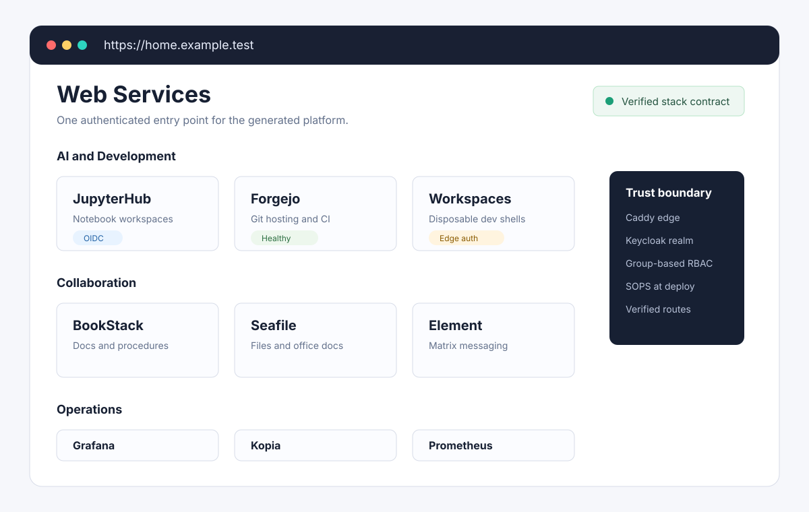

Secure Core
For owners, private operators, tiny teams, households, and small orgs.
- Caddy and Keycloak
- Service homepage/catalog
- Vaultwarden and BookStack
- Basic monitoring
- Backups and verification
Client-owned open-source infrastructure
Replace scattered SaaS tools with a client-owned stack: SSO, docs, files, passwords, monitoring, backups, automation, and AI-ready workspaces.
Make small groups powerful without making them dependent.

The problem
Small teams often end up with too many SaaS subscriptions, fragmented logins, weak access control, poor backups, vendor lock-in, and operational knowledge scattered across tools they do not control.
The offer
I deploy and adapt private open-source business platforms using a generated, tested stack: Caddy, Keycloak, Docker Compose, systemd user services, SOPS-backed secrets, observability, backups, and verification.
You get a private platform your team owns, with shared login, useful apps, monitoring, backups, and documentation.
Packages
For owners, private operators, tiny teams, households, and small orgs.
For small teams replacing scattered SaaS tools.
For technical teams, data-heavy operators, and agent-assisted workflows.
Proof
The stack is generated, deployed as a secret-free bundle, supervised by systemd, protected by SSO/RBAC, and verified after deployment.
Good fit
Poor fit
Next step
Send me your current SaaS/tool list. I will tell you what can be replaced, what should stay SaaS, and what a private stack would look like.